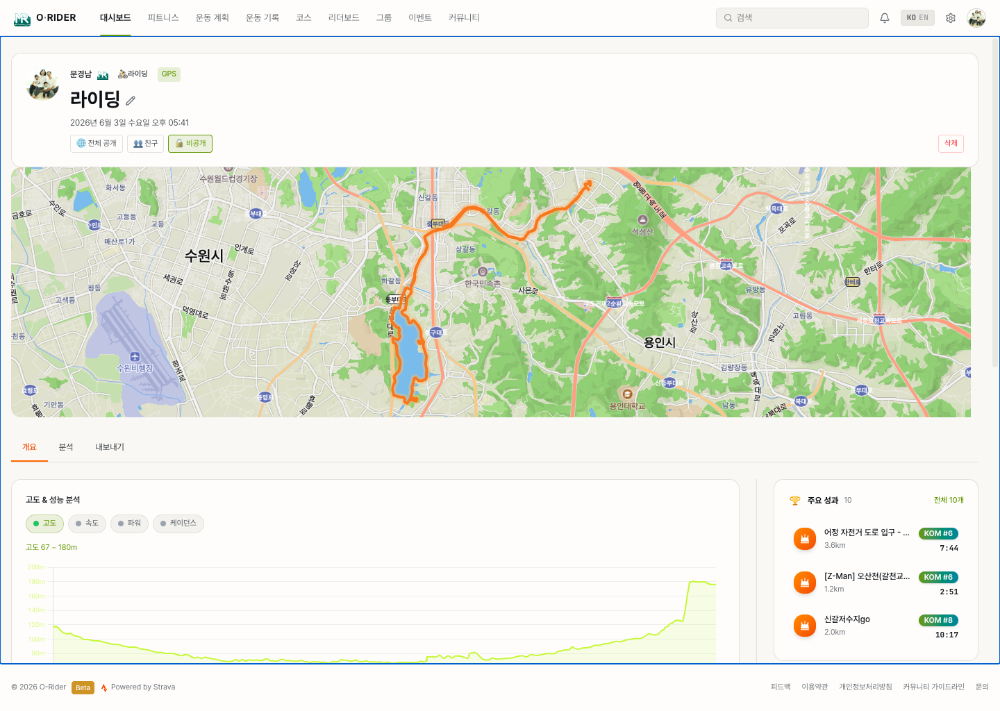

2. 라이딩 기록 확인하기
이 섹션의 목적
대시보드에서 내 라이딩 기록을 확인하고, 기본 통계를 읽어 "오늘/이번 주 얼마나 탔는지"를 파악하는 것.

2.1 활동 피드 — "최근에 무엇을 탔는가"
확인할 것
대시보드 중앙의 "최근 활동" 피드에서 최근 라이딩 기록을 시간순으로 봅니다. 피드에는 내 활동과 다른 라이더의 전체 공개 활동이 함께 표시되며, 각 활동 카드에는 경로 지도와 함께 다음 통계가 표시됩니다:
| 항목 | 읽는 법 |
|---|---|
| 경로 지도 | 어디를 달렸는지 한눈에 파악 |
| 거리 | 총 주행 거리 — 라이딩 규모 판단 |
| 획득 고도 | 총 오른 높이 — 코스 난이도 판단 기준 |
| 시간 | 이동 시간 — 실제 페달을 밟은 시간 |
| 평균 속도 | 거리/이동 시간 기준 평균 속도 |
| 파워 · 심박 | 센서가 연결된 라이딩에서만 표시 (W · bpm) |
해야 할 것
활동 카드를 클릭하면 활동 상세 분석 페이지로 이동합니다.
결과
"이번 주 어떤 라이딩을 했는지"를 빠르게 훑어볼 수 있습니다.
2.2 활동 검색 — "특정 기록 찾기"
확인할 것
피드 상단에는 항상 소유자 필터(전체 / 친구 / 본인)가 있고, 그 아래 검색바에 키워드를 입력하면 기간 필터가 함께 나타납니다.
해야 할 것
| 기간 필터 | 용도 |
|---|---|
| 7일 | 이번 주 라이딩만 빠르게 확인 |
| 30일 | 한 달 동안의 라이딩 패턴 파악 |
| 90일 | 시즌 단위 기록 비교 |
| 올해 / 전체 | 장기 기록 조회 |
결과
"지난달 북한강 라이딩"처럼 특정 기록을 빠르게 찾아 상세 분석으로 넘어갈 수 있습니다.
2.3 최근 7일 요약 — "라이딩을 숫자로 확인"
확인할 것
대시보드 상단의 통계 스트립에서 최근 7일(롤링) 통계를 봅니다. 달력상의 주(週)가 아니라 오늘부터 거꾸로 7일간의 합계입니다.
| 항목 | 의미 | 해석 기준 |
|---|---|---|
| 최근 7일 거리 | 최근 7일 총 거리 | 볼륨 파악 — 직전 7일과 비교하여 증감 확인 |
| 라이드 수 | 최근 7일 몇 번 탔는지 | 꾸준히 타는지 판단 — 주 3회 이상이면 양호 |
| 이동 시간 | 최근 7일 총 이동 시간 | 투자 시간 파악 — 거리 대비 시간이 길면 오르막 비중 높음 |
| 획득 고도 | 최근 7일 총 상승 고도 | 난이도 파악 — 같은 거리라도 고도가 높으면 더 힘든 코스 |
같은 스트립에 FTP(역치 파워)와 피트니스(CTL · 폼 TSB)도 함께 표시되어 현재 체력 수준을 한눈에 가늠할 수 있습니다.
결과
"최근 일주일 동안 충분히 탔는가"를 숫자로 확인하고, 다음 라이딩 계획의 기준점으로 삼습니다.
2.4 주간 TSS 차트 — "훈련 부하를 시각적으로 확인"
확인할 것
사이드바의 주간 TSS 차트는 최근 12주의 주간 훈련 부하(TSS)를 막대 그래프로 보여줍니다. 차트 아래에는 평균/주, 최고주, 추세(↑/↓)가 함께 표시됩니다.
해석 기준
- 막대가 고른 높이 — 꾸준히 훈련 부하를 유지하고 있음
- 막대가 점점 높아짐 — 훈련 부하가 증가하는 추세
- 특정 주만 비어 있음 — 그 주에 쉬었거나 컨디션 문제가 있었을 수 있음
- 막대 높이가 들쭉날쭉 — 루틴이 불규칙 — 일정한 주간 목표 설정을 고려
함께 보기
사이드바에는 주간 TSS 아래로 월간 목표(이번 달 누적 거리 / 목표 거리 · 달성률)와 피트니스 스냅샷(CTL · ATL · TSB)도 표시됩니다. 운동 계획이 없으면 월간 목표는 "월간 목표 설정" 안내로 표시됩니다.
결과
3개월간의 훈련 부하 일관성과 이번 달 진행 상황을 한눈에 파악할 수 있습니다.
2.5 활동 직접 추가 — FIT · GPX 파일 업로드
사이클링 컴퓨터나 다른 앱에서 받은 기록 파일을 Orider에 직접 올립니다. 활동 업로드 화면에서 FIT 또는 GPX 파일을 끌어다 놓거나 클릭해 선택하며, 여러 파일을 한 번에 올릴 수 있습니다.
| 항목 | 지원 내용 |
|---|---|
| 지원 형식 | .fit · .gpx (TCX·수동 입력은 지원하지 않음) |
| 파일당 최대 크기 | 10MB |
| 여러 파일 | 동시 선택·업로드 가능, 파일별 진행 상태 표시 |
| 활동 이름 | 파일별로 직접 입력 (기본값: 파일명) |
| 공개 범위 | 전체 공개 · 팔로워 · 비공개 중 선택 |